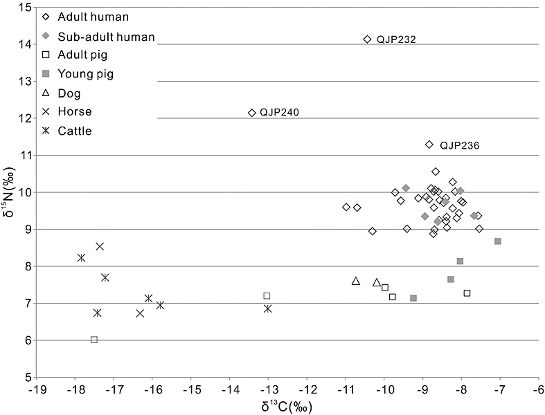

Re-analysis of Dong et al. (2013) – Stable Isotope Analysis of Human and Animal Remains at the Qijiaping Site in Middle Gansu, China
Author
Christian Mei
Bronze mirror, Gansu. Qijia culture (2400–1900) National Museum of China.
Objectives
The point of this exercise is to replicate some of the analyses and figures centered on carbon and nitrogen isotopic data collected from human and animal remains at the site of Qijiaping , China. However, I was unable to replicate some of the figures and tests when data from other papers got incorporated. For some reason, these articles were inaccessible to me and it would’ve been exciting to recreate all all of the figures from this 2013 study.
Background
During the late prehistoric period, there were large intercontinental exchanges between communities across Eurasia. These were mainly characterized by long-distance movements of metallurgic goods, livestock, and crops. However, when and where these exchanges happened is still subject to more study. This paper focuses on the Hexi Corridor in China, a pathway between east and west Eurasia, as a potential location where such long-distance exchange of goods happened. There is speculation that the barley remains, sheep/goat, and cattle bones found in southwest Asia were imports from the west that travelled through the Hexi Corridor at around 2000 BC.
A cultural complex associated with this geographical and chronological region is the Qijia culture, named after the Qijiaping site (see map below) excavated in 1934 and 1975. This later excavation led to the collection of many human and animal skeletons along with cultural artifacts such as pottery, stone and bone tools and an earlt Chinese bronze mirror. This more comprehensive collection provided the researchers the opportunity to take a closer look at the human and animal remains to reconstruct their diets. The idea is that through exploration of their diets, they would be able to find evidence of an exchange of eastern and western cereals. If there was a strong western cereal influence in this region, then they would hypothesize a higher presence of barley in the human and animal diets.
This map will help us position ourselves geographically and shows the different Qijia cultural sites that the paper takes into account. However, due to the reasons stated in the Objectives section, I will only focus on the human and animal remains found at the site of Qijiaping marked by triangle number 4.
The assumption that the Qijia culture experienced one of these intercontinental exchanges is due to the account of western influences being reflected in Qijia material culture and the presence of wheat and barley in archaeobotanical assemblages dating to the second millennium from Gansu and Qinghai provinces.
Methods
All the following analyses are based on carbon and nitrogen isotope data collected from animal and human remains at the site of Qijiaping. Stable isotope ratios in bone collagen reflect the average isotopic composition of an individual’s dietary intake over a period of years. Archaeologists use δ13C values from bone remains to understand general patterns of dietary change (C3 versus C4 foodstuffs or marine versus terrestrial foodstuffs) across space and time. The distinction between C3 and C4 comes from the different mechanisms of CO2 uptake in the plant’s photosynthetic pathway. Northern China has millet as their main C4 cereal. These crops have a distinct δ13C signal that can differentiate themselves from the natural vegetation, which is dominated by C3 plants and other C3 cereals (e.g. wheat, barley and rice).
This image will help you see the how we can distinguish between C4 and C3 plants based on their carbon isotope signals. Image sourced from David Naafs.
Nitrogen isotopes are a bit harder to understand. However, the simplified version of it is that nitrogen isotopic ratios (δ15N) reflect the position of an individual in the food chain and can give an estimation on the level of protein in the diet because δ15N values increase with trophic level. This might be more useful when trying to understand differences in diet in individuals belonging to different social classes.
The samples collected from the Qijiaping site comprise of: 42 human (34 adults and eight subadults younger than 16 years of age) and 19 animal (nine pigs, two dogs, two horses and six cows) samples.
Analysis
Step 1) Load the Data
This paper displayed all of the data collected from Qijiaping samples on a Tables 1 and 2. In order to get the data, I had to copy and paste them on an excel file I created which I will include in the repository associated with the replication assignment. I made sure that all values were the same as the ones figured on the original tables since copy/paste errors are possible.
I will first load the packages needed for the study:
library(readxl)library(tidyverse)
── Attaching core tidyverse packages ──────────────────────── tidyverse 2.0.0 ──
✔ dplyr 1.1.4 ✔ readr 2.1.5
✔ forcats 1.0.0 ✔ stringr 1.5.1
✔ ggplot2 3.5.1 ✔ tibble 3.2.1
✔ lubridate 1.9.4 ✔ tidyr 1.3.1
✔ purrr 1.0.2
── Conflicts ────────────────────────────────────────── tidyverse_conflicts() ──
✖ dplyr::filter() masks stats::filter()
✖ dplyr::lag() masks stats::lag()
ℹ Use the conflicted package (<http://conflicted.r-lib.org/>) to force all conflicts to become errors
library(dplyr)
Since I added the data in two separate sheets within my excel file, I used the sheet = argument to isolate the direct the human and animal isotope values to where they should be:
And let’s also get sum summary stats for the entire table
summary(human_isotope)
Lab_code Provenience age_years Skeletal_element
Length:42 Length:42 Length:42 Length:42
Class :character Class :character Class :character Class :character
Mode :character Mode :character Mode :character Mode :character
Collagen_wt.% Cwt.% Nwt.% C:N
Min. : 1.300 Min. :41.70 Min. :15.30 Min. :3.100
1st Qu.: 5.775 1st Qu.:44.00 1st Qu.:16.20 1st Qu.:3.200
Median :10.000 Median :44.85 Median :16.40 Median :3.200
Mean : 9.695 Mean :45.27 Mean :16.59 Mean :3.198
3rd Qu.:13.325 3rd Qu.:46.50 3rd Qu.:17.00 3rd Qu.:3.200
Max. :16.600 Max. :51.00 Max. :18.60 Max. :3.200
δ13C δ15N
Min. :-13.400 Min. : 8.900
1st Qu.: -8.900 1st Qu.: 9.300
Median : -8.650 Median : 9.700
Mean : -8.855 Mean : 9.819
3rd Qu.: -8.250 3rd Qu.:10.000
Max. : -7.500 Max. :14.100
summary(animal_isotope)
Lab_code Species Skeletal_element Collagen_wt.%
Length:19 Length:19 Length:19 Min. : 8.00
Class :character Class :character Class :character 1st Qu.:12.50
Mode :character Mode :character Mode :character Median :13.90
Mean :13.69
3rd Qu.:15.30
Max. :16.50
C_wt.% N_wt.% C:N δ13C δ15N
Min. :41.60 Min. :15.30 Min. :3.2 Min. :-17.80 Min. :6.000
1st Qu.:44.55 1st Qu.:16.35 1st Qu.:3.2 1st Qu.:-16.75 1st Qu.:7.000
Median :46.00 Median :16.80 Median :3.2 Median :-13.00 Median :7.300
Mean :45.66 Mean :16.70 Mean :3.2 Mean :-12.77 Mean :7.395
3rd Qu.:46.90 3rd Qu.:17.10 3rd Qu.:3.2 3rd Qu.: -9.50 3rd Qu.:7.650
Max. :48.80 Max. :17.80 Max. :3.2 Max. : -7.10 Max. :8.700
Step 2) Clean data
One of the important comparisons made in the paper was regarding the age of animals and humans. These were divided into adult and sub-adult. For humans, ages from 16 and upwards were labeled as adults:
“There are 42 human (34 adults and eight subadults younger than 16 years of age)”
This required manually changing the age values into their respective age category. The animal dataset was already correctly categorized into age categories.
human_isotope_new <- human_isotope %>%rename(d13C =`δ13C`, d15N =`δ15N`) %>%# Renaming the delta columns to make it easier down the lineselect(Lab_code, age_years, d13C, d15N) # Get 4 columns# Create a new column 'Species' based on conditions in 'age_years'human_isotope_new <- human_isotope_new %>%mutate(Species =case_when( age_years %in%c("adult", "40–50", "20–25", "~40", "45–50", "18–20", "18–22", "20–15") ~"adult human", age_years %in%c("juvenile", "13–14", "12–16", "11–13", "7–8", "11–16") ~"sub-adult human",TRUE~"unknown"# Optional: Assign "unknown" if the value doesn't match any category ))human_isotope_new <- human_isotope_new %>%select(Lab_code, Species, d13C, d15N) # Only extract columns that we wanthead(human_isotope_new)
# A tibble: 6 × 4
Lab_code Species d13C d15N
<chr> <chr> <dbl> <dbl>
1 QJP211 adult human -9.6 9.8
2 QJP212 adult human -9.1 9.8
3 QJP214 adult human -7.5 9
4 QJP215 adult human -8.2 10
5 QJP217 adult human -8.4 9.3
6 QJP218 adult human -10.7 9.6
animal_isotope_new <- animal_isotope %>%rename(d13C =`δ13C`, d15N =`δ15N`) %>%# For animals, we're only going to change the delta column namesselect(Lab_code, Species, d13C, d15N)head(animal_isotope_new)
It’s time to recreate Figure 2 from the paper. This scatterplot is meant to map both carbon and nitrogen isotope signals for each sample. Instead of using shapes to determine the different species, I stuck to colors. The resulting figure fully recapitulates what is seen in the paper. See below:
ggplot(merged_data_set, aes(x = d13C, y = d15N, color = Species)) +geom_point() +# Removed fill, used color inside aes()labs(x ="δ13C (‰)", y ="δ15N (‰)") +ylim(5,15) +xlim(-19,-6) +theme_minimal()
Here is the original Figure 2:

Based on this figure, we can see that based on δ13C values, we can reflect 3 diets going from left to right: predominantly C3 , mainly C4 and mixed C3 and C4. We see that cattle and horse samples reflect a predominantly C3 diet, which will important later when we compare δ13C values across animal diets. Based on this general survey, both adult and sub-adult humans have a C4 δ13C signal and a diet higher in protein (δ15N) than animals.
Descriptive Statistics
The researchers then take a closer look at the carbon and nitrogen isotope values when they are categorized by their diet class. To do this, I decided to create a new column called Animal_diet_class where Humans were their own category; pig and dog were considered Omnivores; and horse and cattle were annotated as Herbivore. I will be recreating Figure 3 and Table 4.
isotope_barplot_data <- merged_data_set %>%mutate(Animal_diet_class =case_when( Species %in%c("adult human", "sub-adult human") ~"Human", Species %in%c("Pig_adult", "Pig_subadult", "Dog") ~"Omnivore", Species %in%c("Cattle", "Horse") ~"Herbivore",TRUE~"unknown"# Optional: Assign "unknown" if the value doesn't match any category ))isotope_barplot_data$Animal_diet_class <-factor(isotope_barplot_data$Animal_diet_class, levels =c("Human", "Omnivore", "Herbivore")) #factor and relevel using the level argument so that diet classes appear in the order shown in the original figurestr(isotope_barplot_data)
Figure 2 also displays important outliers by their sample ID. To do this we need to extract the Lab_code of the datapoints that lie outside 1.5 × IQR above the third quartile (Q3) or below the first quartile (Q1).
carbon_outliers <- isotope_barplot_data %>%group_by(Animal_diet_class) %>%# We need this step so that we don't get outliers for the entire datasetmutate(Q1 =quantile(d13C, 0.25, na.rm =TRUE),Q3 =quantile(d13C, 0.75, na.rm =TRUE),IQR = Q3 - Q1,lower_bound = Q1 -1.5* IQR,upper_bound = Q3 +1.5* IQR ) %>%filter(d13C < lower_bound | d13C > upper_bound)
Now we can plot the boxplot using gglopt2:
box_carbon <-ggplot(isotope_barplot_data, aes(x = Animal_diet_class, y = d13C)) +geom_boxplot(width =0.25, fill ="lightgrey")+labs(y ="δ13C (‰)", x ="Diet Class") +geom_text(data = carbon_outliers, aes(label = Lab_code), vjust =-1, color ="black") +scale_x_discrete(labels =c("Human \n n = 42", "Omnivores \n (Pig & Dog) \n n = 11", "Herbivores \n (Cattle & Horse) \n n = 8")) +theme_minimal()box_carbon
box_nitrogen <-ggplot(isotope_barplot_data, aes(x = Animal_diet_class, y = d15N)) +geom_boxplot(width =0.25, fill ="lightgrey")+labs(y ="δ15N (‰)", x ="Diet Class") +geom_text(data = nitrogen_outliers, aes(label = Lab_code), vjust =-1, color ="black") +theme_minimal() +scale_x_discrete(labels =c("Human \n n = 42", "Omnivores \n (Pig & Dog) \n n = 11", "Herbivores \n (Cattle & Horse) \n n = 8")) +# This was the lazy and easiest way to include the number of samples per group in the boxplotcoord_cartesian(ylim =c(5,16))box_nitrogen
Now let’s add combine these into a single panel to make it look more like the original
library(gridExtra)
Attaching package: 'gridExtra'
The following object is masked from 'package:dplyr':
combine
grid.arrange(box_carbon, box_nitrogen, ncol =2)
This is how Figure 2 looks like in the paper:
To finish this section on the descriptive stats of this paper, we will build a table that will offer the means, SD, and range of our carbon and nitrogen isotope data. The data will also be grouped by diet class
# Calculate summary statistics for d13C and d15N by diet classsummary_stats <- isotope_barplot_data %>%group_by(Animal_diet_class) %>%summarise(sample_size =length(d13C),mean_d13C =mean(d13C),sd_d13C =sd(d13C),range_d13C =max(d13C) -min(d13C),mean_d15N =mean(d15N),sd_d15N =sd(d15N),range_d15N =max(d15N) -min(d15N) ) %>%arrange(Animal_diet_class)# View the resultsummary_stats
This is great! This analysis just recapitulates what Figure 2 told us about the overall diet composition of humans and animals at the Qijiaping site. Looking at Table 4 and Figure 3, we can confirm that:
Herbivore δ15N values fall within a narrow range from 6.7‰ to 8.5‰ (mean = 7.4 ± 0.7‰). The δ15N values of dogs and pigs have a range of 6.0–8.7‰ with a mean of 7.4 ± 0.7‰.
The human δ13C values range from −13.4‰ to −7.5‰ (n = 42), with a mean of −8.9 ± 1.1‰. The δ15N values range from 8.9‰ to 14.1‰ (n = 42), with a mean of 9.8 ± 0.9‰.
Looking at my recreation of Figure 3, we also find the 3 outlier human samples in the δ15N analysis. Among these individuals (QJP232, QJP240 and QJP236), QJP232 and QJP240 were considered extreme outliers. Moreover, the researchers state that:
The enrichment of 6.7‰ (QJP232) is too high to be interpreted as the difference of a single trophic level.
Although δ13C and δ15N isotope ratios are not commonly used to trace human mobility, the researchers conclude that a possible theory explaining these outlier values is that “both QJP232 and QJP240 moved from surrounding areas where people ate different diets.”
Inferential Statistics
The researchers were also interested to see if there were importantδ13C and δ15N differences between adults and sub-adults (16 years and below). In the paper, they state:
No significant isotopic differences were found between subadults and adults (Z = −0.737, P = 0.461 for δ13C and Z = −0.913, P = 0.361 for δ15N), a result indicating that the dietary difference between subadults and adults is not statistically significant.
In the methods section, they describe that:
Differences in mean isotope values among age groups and different sites were determined with Mann–Whitney tests. The significance level was set at p < 0.05. All statistical analyses were performed with SPSS15.0 for Windows (SPSS, USA).
With that, let’s get into our Mann-Whitney test!
First, let’s see the layout of the dataset we’ll be using:
head(human_isotope_new)
# A tibble: 6 × 4
Lab_code Species d13C d15N
<chr> <chr> <dbl> <dbl>
1 QJP211 adult human -9.6 9.8
2 QJP212 adult human -9.1 9.8
3 QJP214 adult human -7.5 9
4 QJP215 adult human -8.2 10
5 QJP217 adult human -8.4 9.3
6 QJP218 adult human -10.7 9.6
We can use the wilcox.test() to run a two-sample Wilcoxon test which is also known as ‘Mann-Whitney’ test.
mann_test_c <-wilcox.test(d13C ~as.factor(Species), # Establishing Species as factordata = human_isotope_new,exact =FALSE, correct =TRUE)mann_test_c
Wilcoxon rank sum test with continuity correction
data: d13C by as.factor(Species)
W = 108, p-value = 0.3768
alternative hypothesis: true location shift is not equal to 0
Wilcoxon rank sum test with continuity correction
data: d15N by as.factor(Species)
W = 167.5, p-value = 0.3188
alternative hypothesis: true location shift is not equal to 0
Here’s when I noticed 2 things:
The test outputs a Z score while my wilcox.test() spits out a W score.
My p-values do not match the ones reported by the study, although they both report non-significant (p>0.05) values.
I wanted to first address the Z-score problem by figuring out how I can derive it from the output that I got. After some digging, I came across this formula to convert W to Z score:
\[
Z = \frac{W - \mu_W}{\sigma_W}
\]
Where μW is the mean of the W statistic under the null hypothesis and σW is the standard deviation of W under the null hypothesis.
While my values are different, the inference is the same! Both values show that dietary differences between subadults and adults are not statistically significant.
To understand why my values differ from the Dong et al. (2013) results, I re-read the paper and noticed that they use SPSS to calculate the Mann Whitney test. However, according to these sources below, there might not be an important difference in the calculation that might result in this discrepancy.
I also manually calculated the Mann Whitney U test using this website and it extremely similar values to what came out in R.
Therefore, the cause might lie in the data. Before running the Mann Whitney U test, I made sure that I had the correct sample of adults and subadults which were 34 and 8 respectively. I made this separation based on the 16 year old threshold stated by the paper. In theory, I should have the same sample and the test should yield near identical W and Z scores. This discrepancy therefore could be attributed to the accuracy of the isotope values - e.g decimal places - for each sample.